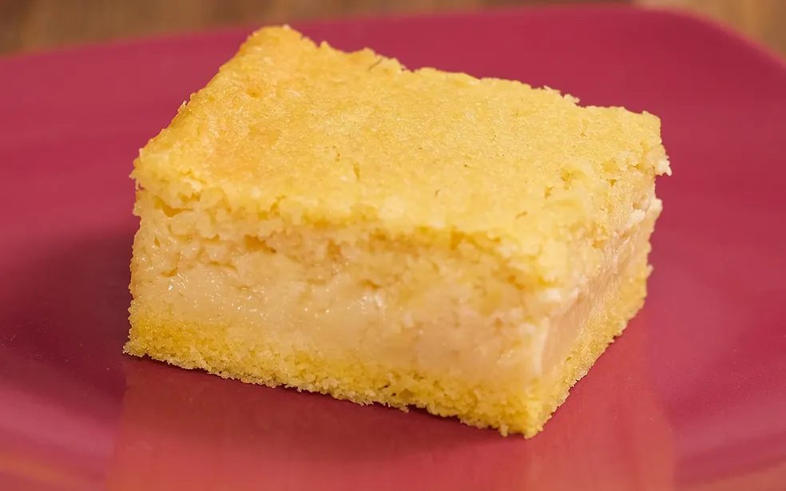
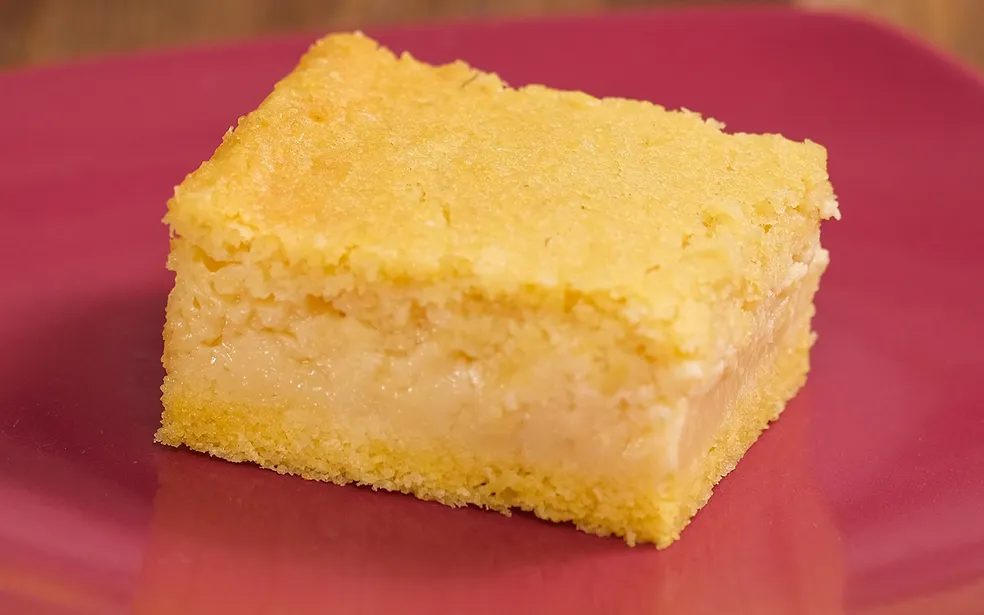

bolo de milho
ngredientes (7 porções)
- ovo 3 ovos
- milho-verde 1 lata de milho verde
- leite
1 lata de leite (a mesma medida da lata de milho)
- açúcar
1 lata de açúcar
- óleo
1/2 lata de óleo
- manteiga
2 colheres (sopa) de manteiga
- milharina
1 lata de de milharina ou fubá (a mesma medida da lata de milho)
 
